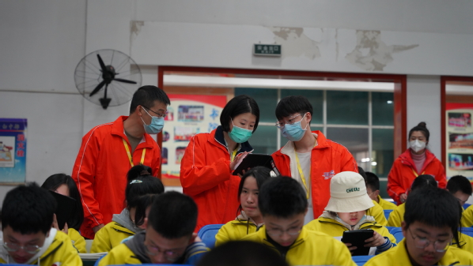
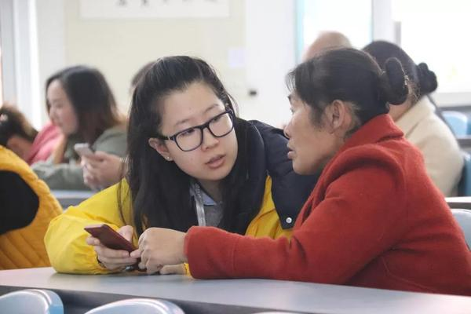
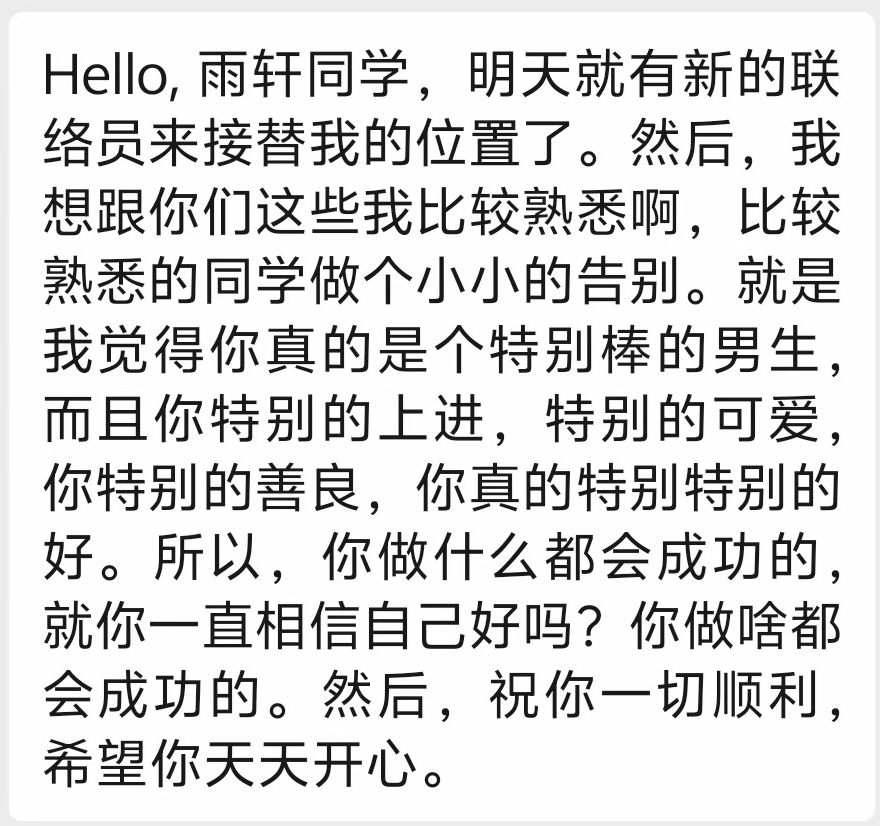
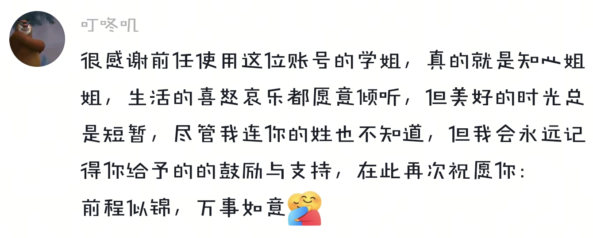

暨南大学经济与社会研究院
2016—2026 ／ 绵竹 · 成长手记
十年了，
我们还在认真
记录成长
小时候参加过的调查，
如今又来询问近况。
近日，网友 Gardenia__ 分享了一条回访消息。发信人是暨南大学社会调查中心的联络员，想了解小时候参加过调查的同学，如今过得怎么样。
“我的童年和我打了一个招呼。”这位网友用这句话形容收到消息时的感受。评论区里也有人认出了这个项目。
从“小朋友”到“大朋友”
消息背后，是持续了十年的绵竹儿童认知与非认知能力发展追踪项目。2016年，暨南大学经济与社会研究院与绵竹市教育局启动合作；2017年，项目在绵竹16所小学开展基线调查，覆盖近6000名学生，并收集家长、监护人和教师等多方信息。
随后，调查跟着学生进入新的学段，也陆续纳入新的学生队列。最初参加调查的小学生逐渐长成了“大朋友”。原帖作者在回复里说：
这样的重逢在过去的调查中也经常发生。2020年，预调查小队走进遵道学校初中部，学生们与这支小队相认，纷纷说“我记得你们”“你们又来了”。
孩子们身上的改变不仅在于简单的年龄数字，更是他们点点滴滴的生活。持续联系、追踪这些变化，研究者才能把不同时点的信息连起来，了解成长的过程。
一份问卷，也要问得仔细
那次预调查中，团队一边讲解例题，一边记下每个模块的作答时间、学生理解上的难点和特殊填答情况。这些反馈，是带回去用于修改问卷和调查流程的宝贵资料。
一道题怎样问孩子才能听明白？一份问卷要花多久完成？正式调查前，团队会先到学校试访。调查员也要经过培训和模拟访问，练习提问、解释和核对。在团队2020年的培训中，还安排有四川方言访问演练。正是因为真正地做到了去到被访者的身边，这场调查才能在今天来到你的面前。

2023年调查现场
认真回答问卷的，还有孩子的家人。2019年，调查员万佳乐在手记中写到：一位奶奶为了把情况填清楚，拿起电话，询问在外务工的儿子已经出去多少年了。问过年数，她又对儿子说：“我有点想你了。”

2019年监护人访问现场
问卷里的家庭情况，需要这样耐心地问、仔细地核实。学生、家长和老师愿意花时间回答，团队就要尽量把信息收集准确。数据可靠，研究才有扎实的依据，也才能为教育实践和政策讨论提供有用的参考。
这些追踪数据，也被用来检验一个问题：测量非认知能力的问卷，能不能更短一些？2024年发表在《Economics Letters》上的一项研究，利用多轮追踪数据筛选量表条目，发现经过选择的较短版本，在预测后续学业表现时可以保持、甚至提高预测力。减少参与者的负担，同时检验测量是否有效，也是改进调查的一部分。
联络员换了，联系还在
参与者在评论区分享的另一段聊天记录，记录了一次工作交接。联络员学姐告诉熟悉的同学，第二天会有新的联络员接替自己。告别时，她说了许多鼓励的话，最后祝他一切顺利、天天开心。

这位同学后来在评论里感谢她，说她愿意倾听生活里的喜怒哀乐，自己会记得她给过的鼓励和支持。

十年间，一批批调查员和联络员接过工作。学生、家庭与学校一次次配合，让追踪调查得以继续。
感谢这些年来愿意回答、配合调查的学生、家长和老师，也感谢每一批调查员和联络员的投入。
“我们现在想了解一下你的近况。”
资料及图片来源：暨南大学经济与社会研究院、社会调查中心；网友公开帖文及评论。